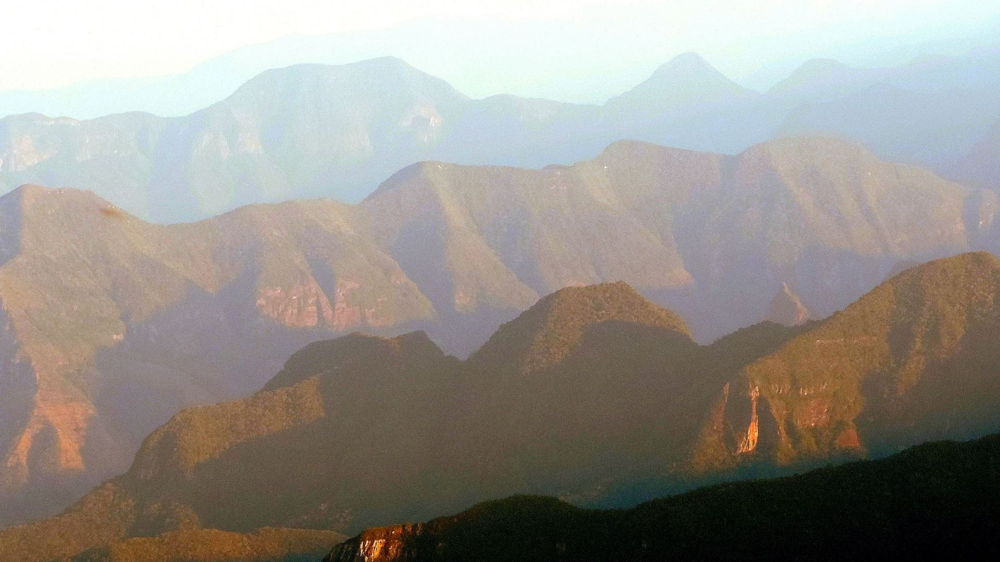

Erro 404
Você se perdeu na neblina da serra
O endereço que você abriu não existe ou mudou de lugar. Acontece até com quem conhece o caminho: na serra catarinense, a cerração baixa em minutos.
Para onde ir